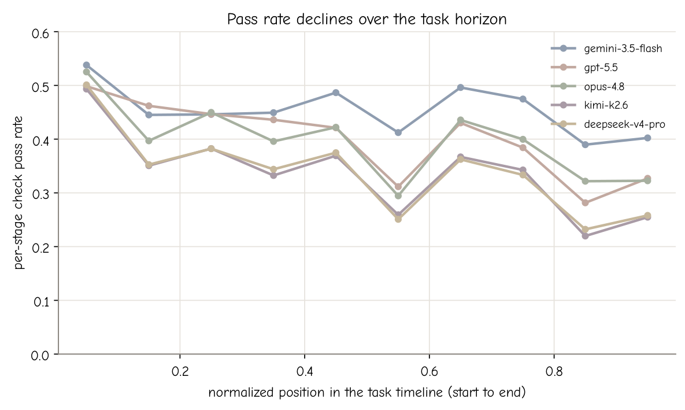
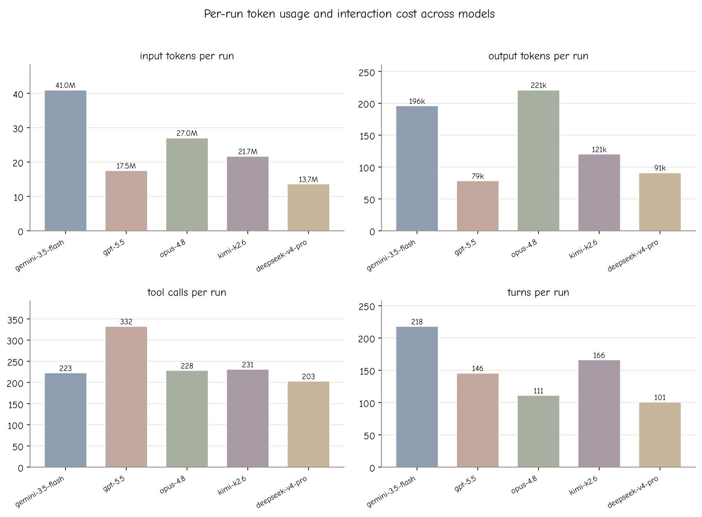

Leaderboard
Seven contemporary frontier models on the full evaluation set of 200 tasks. Each task is run three times; we report avg@3 / max@3 / min@3 and within-task σ, together with per-run token and interaction cost. Higher is better.
| # | Model | avg@3 | max@3 | min@3 | σ | Input (M) | Output | Tool calls | Turns |
|---|---|---|---|---|---|---|---|---|---|
| 1 | Opus-5 | 0.325 | 0.412 | 0.238 | 0.098 | 25.6 | 325,198 | 316 | 210 |
| 2 | gpt-5.5 | 0.301 | 0.388 | 0.215 | 0.100 | 17.5 | 78,631 | 333 | 146 |
| 3 | gemini-3.5-flash | 0.275 | 0.356 | 0.201 | 0.083 | 41.2 | 213,757 | 243 | 227 |
| 4 | opus-4.8 | 0.275 | 0.343 | 0.203 | 0.075 | 27.0 | 220,795 | 228 | 111 |
| 5 | GLM 5.2 | 0.254 | 0.299 | 0.209 | 0.048 | 22.3 | 133,285 | 288 | 141 |
| 6 | kimi-k2.6 | 0.226 | 0.271 | 0.184 | 0.046 | 21.7 | 120,516 | 231 | 166 |
| 7 | deepseek-v4-pro | 0.211 | 0.247 | 0.177 | 0.037 | 13.7 | 91,088 | 203 | 101 |
A task's run score is the fraction of weighted checks it passes (0 to 1). Input tokens count the full context read per turn; output tokens count all generation. Models were run under the same tool-calling harness at their strongest reasoning setting.
Per-domain scores (avg@3)
Difficulty is inherent to the domains: the easy-to-hard ordering is consistent across models, and no model is competent everywhere.
| Domain | Opus-5 | gpt-5.5 | gemini | opus-4.8 | GLM 5.2 | kimi | deepseek |
|---|---|---|---|---|---|---|---|
| career | 0.270 | 0.219 | 0.219 | 0.243 | 0.231 | 0.220 | 0.193 |
| exam preparation | 0.235 | 0.202 | 0.256 | 0.198 | 0.187 | 0.160 | 0.163 |
| finance | 0.254 | 0.232 | 0.277 | 0.208 | 0.240 | 0.211 | 0.204 |
| fitness | 0.314 | 0.276 | 0.263 | 0.243 | 0.182 | 0.173 | 0.136 |
| litigation | 0.332 | 0.320 | 0.283 | 0.321 | 0.258 | 0.211 | 0.230 |
| renovation | 0.457 | 0.415 | 0.308 | 0.359 | 0.347 | 0.334 | 0.271 |
| rental | 0.254 | 0.135 | 0.223 | 0.168 | 0.136 | 0.098 | 0.105 |
| shopping | 0.511 | 0.602 | 0.332 | 0.411 | 0.386 | 0.410 | 0.332 |
| team building | 0.218 | 0.214 | 0.202 | 0.233 | 0.177 | 0.105 | 0.137 |
| travel | 0.410 | 0.391 | 0.391 | 0.377 | 0.394 | 0.336 | 0.337 |
Long-horizon coherence & cost

Per-stage check pass rate declines from the start to the end of a task for
every model: long-horizon coherence is lost over time.

Per-run input tokens, output tokens, tool calls, and turns. Spending more
does not by itself buy a higher score.